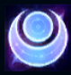
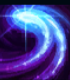
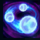
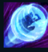
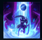

Diana
| Diana Scorn of The Moon | |
|---|---|
| Release date | 07.08.2012 |
| Class | Assassin, Diver |
| Positions | Middle |
| Resource | Mana |
| Range type | Melee |
| Adaptive type | Magic |
| Base statistics | |||
| Health | 570 – 2185 | Mana | 375 – 800 |
| Health regen. | 7.5 – 21.95 |
Mana regen. | 8 – 21.6 |
| Armor | 31 – 92.2 | Attack damage | 57 – 108 |
| Magic resist. | 32 – 53.25 | Crit. damage | 175% |
| Move. speed | 345 | Attack range | 150 |
Diana e o războinică ce poartă o seceră din argintul Lunii și luptă de partea lunarilor, un grup de adepți ai unei religii de pe Muntele Targon ce aproape că a fost anihilată de solari. Este înveșmântată într-o armură strălucitoare de culoarea zăpezii pe înserat și este încarnarea puterii Lunii argintii. Pentru că poartă în suflet esența unui Aspect de dincolo de vârful semeț al Targonului, Diana nu mai este complet umană, iar acum încearcă să-și înțeleagă puterea și scopul în lume. |  |
SECERA DIN ARGINTUL LUNI Fiecare a treia lovitură spintecă inamicii din apropiere și le provoacă daune magice suplimentare. După ce folosește o vrajă, Diana primește viteză de atac pentru următoarele 3 atacuri. |
||
|---|---|---|---|---|
 |
LOVITURA SEMILUNII Lansează un fulger de energie lunară într-un arc de cerc, provocând daune magice. Le aplică inamicilor afectați efectul ''Lumina Lunii'', dezvăluindu-i timp de 3 secunde dacă nu au prezența mascată. |
|||
 |
CASCADA PALIDĂ Diana creează trei sfere în jurul ei, care sunt detonate când intră în contact cu inamicii, provocând daune într-o zonă. De asemenea, primește un scut temporar care absoarbe daune. Acest scut devine mai puternic dacă este detonată și a treia sferă. |
|||
|  |
GOANA LUNII Diana devine întruchiparea fizică a Lunii răzbunătoare, năpustindu-se asupra unui inamic și provocându-i daune magice. ''Goana Lunii'' nu are timp de reactivare atunci când e folosită pentru năpustirea asupra unui inamic afectat de ''Lumina Lunii''. Efectul ''Lumina lunii'' va fi eliminat de pe toți inamicii, indiferent dacă au fost sau nu ținta ''Goanei Lunii''. |
|||
 |
CĂDEREA LUNII Diana dezvăluie și trage spre ea toți inamicii din apropiere, încetinindu-i. Dacă Diana trage unul sau mai mulți campioni inamici, ''Lumina Lunii'' cade asupra ei după un scurt timp, provocând daune magice într-o zonă din jurul ei; valoarea daunelor crește pentru fiecare țintă suplimentară trasă. |